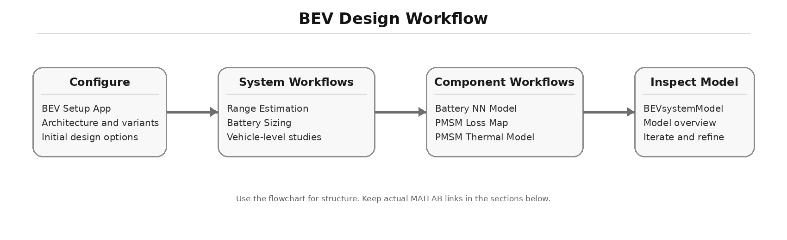

Electric Vehicle Design with Simscape™
This repository contains model and code to help engineers design battery electric vehicle (BEV), including range estimation and battery sizing workflows.
Contents
Overview
Battery electric vehicles (BEV) are gaining popularity as the prices of battery cells fall and the consumer demand for a clean mobility solution increases. The key challenges in their adoption lie in addressing the vehicle range anxiety, safety, and the total ownership cost for the consumer. Li-ion based batteries and electric drivetrains with permanent magnet synchronous motors (PMSM) and/or induction motors power modern BEV systems. Modeling and simulation helps you design vehicles that meet the desired range on the road and perform under all environmental conditions. Virtual design of a BEV platform requires a coupled electro-thermal system model for performance evaluation. In this example repository, you learn how to simulate a BEV AWD/FWD model to estimate its on-road range. You also learn how to size your HV battery pack to achieve your desired range with the vehicle.

Getting Started
Before running the engineering workflows, you configure a vehicle model setup — selecting a template, choosing component fidelities, and setting initial design parameters. The diagram below shows the overall flow from model setup to workflow execution.

The project supports two ways to configure and load the vehicle model. Choose the one that fits your workflow.
| Getting Started | What It Does | When to Use |
|---|---|---|
| Preferred way (Preset) | Use the Preset Picker to browse and apply a shipped vehicle configuration. Three defaults are available: VehicleElectric, VehicleElecAux, and VehicleElectroThermal. Each preset configures the model references, loads the correct parameters, and opens the model ready to simulate. | Quick start with a known-good setup. No manual configuration needed. |
| Custom configuration | Launch the BEV Setup App to select a template, choose component fidelities, link parameter files, and configure environment, HVAC, and driver settings. | When you need specific fidelities, custom environment settings, or non-default operating modes. |
The configured model is then used as the starting point for the design workflows below. For a detailed overview of the reusable component packages, see the Component Overview.
Design Workflows
System-Level Workflows
- Range Estimation Workflow :
Estimate vehicle range over NEDC, WLTC, and EPA drive cycles. The actual range depends on ambient temperature, HVAC load, and driver profile. Evaluate subsystem losses under hot and cold conditions. - Battery Sizing Workflow :
Size the HV battery pack to achieve a target driving range. Compare different cell capacities and pack weights over the NEDC cycle with HVAC on to find the right trade-off between range and vehicle mass.
Component-Level Workflows
- Motor Inverter Loss Map Workflow :
Generate copper, iron, IGBT, and diode loss maps by sweeping the FOC-controlled PMSM across speed, torque, and temperature points. - Gear Ratio Selection Workflow :
Sweep candidate gear ratios over EUDC and US06 cycles on the thermal test bench and compare magnet and winding temperatures to find the best ratio. - Inverter Power Module Life Workflow :
Capture IGBT and diode junction temperatures from drive-cycle simulations, apply rainflow cycle counting, and estimate semiconductor lifetime. - Motor Thermal Durability Workflow :
Run the thermal test bench over extended duty cycles at multiple coolant sump temperatures to assess winding and magnet thermal margins. - Battery Virtual Sensor Workflow :
Train a neural network to predict battery cell temperature from current, voltage, and SOC inputs. A pre-trained model is included for verification. - Motor Thermal Test Bench Workflow :
Shared test bench model used by the gear-ratio, inverter-life, and thermal-durability workflows. Set up parameters and thermal fidelity.
Documentation
Models
Acronyms
- BEV : Battery Electric Vehicle
- PMSM : Permanent Magnet Synchronous Motor
- AWD : All Wheel Drive
- FWD : Forward Wheel Drive